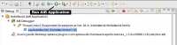
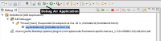
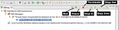

Check out our short screen cast to get quickly started running and debugging your AIR application.
Running your AIR Application
  Run Air Application Button
Run Air Application Button
{kind=link}
After you create an AIR application, press the Run button in your toolbar to launch your application.
To Debug your AIR Application
 Debug Air Application Button
{kind=link}
Aptana Studio creates a Debug configuration when generating your AIR application. To begin debugging, click the Debug button on the toolbar.</div>
Stepping Through Your JavaScript
 Debug Toolbar
{kind=link}
- Add a breakpoint where you'd like the debugger to stop by double clicking on the left gutter for that line. Alternatively, you can also use the Pause button to stop on the first line of JavaScript execution.
- Press the Debug button on the toolbar to launch your application and the debugger will stop the app's execution when it hits the line where you inserted the breakpoint.
- The perspective automatically changes to the Debug perspective (About Eclipse Perspectives).
- You can then use the Step, Step Over, Step In or Run button in the debugging toolbar to maneuver through your source code.
- To end the debug session, click the square red button (the Terminate Button) on the debugging toolbar.